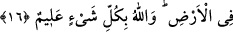

Buyurdu ki: “Çünkü onlar yemin edip günah işlerler; konuşup yalan söylerler.”[221]
Sâib der ki:
Eğer doğruluk ve ihlâsla yola düşersen,
Kâbe daha ilk adımında seni karşılar.
Bâtın doğru olursa zâhir de doğru olur. Çünkü her kap içindekini sızdırır ve her kimse
kendi ağzıyla içinde olanı dışa vurur.
16. De ki: Siz dininizi Allah’a mı öğretiyorsunuz? Oysa Allah göklerde olanları da
bilir, yerde olanları da. Allah her şeyi hakkıyla bilendir.
Rivâyet olunur ki, yukarıdaki âyet nâzil olunca Bedevîler geldiler ve sâdık mümin
olduklarına dâir yemin ettiler. Onları tekzib etmek için bu âyet nâzil oldu.
Ey Muhammed onlara “de ki, siz dininizi Allah’a mı öğretiyorsunuz?”
Siz ‘iman ettik’ diyerek içerisinde bulunduğunuz dininizi mi Allah’a bildiriyorsunuz?
Bu anlamın öğretmek fiili ile ifade edilmesi onların şenaatlerini üst perdeden bildirmek
içindir. Âyetteki istifham da azarlama ve inkâr içindir. Yani siz Allah’a dininizi
anlatmayın. O bilir; ondan hiçbir şey gizli kalmaz. Burada, dini hususlarda tevakkuf
etmenin muteber ve vâcip olduğuna, işin hakikatinin de Allah’a havâle edilmesi
gerektiğine işâret vardır. İsimler O’ndan alınır, kelâm O’ndan talep edilir ve O’nun
emrine tâbi olunur.
Sizin haber vermenize ihtiyacı yoktur. Çünkü “Allah her şeyi hakkıyla bilendir.”
Öncesini te’kid eden ilave bir cümle olarak zikredilmiştir. Yani, îman izhar ederek
içlerinde küfrü barındırmaları da dâhil her şeyi bilir. Bu ifadede üst perdeden onların
cehâletleri gözler önüne serilmiş ve kınanmışlardır. Zira onlar hallerini setredip
gizlemeye çalışıyorlardı.
et-Te’vîlâtu’n-Necmiyye’de der ki: Allah Teâlâ kalplerin semâlarındaki ubûdiyet
istidâdlarını ve nefislerin arzındaki ubûdiyetten isyan ve baş kaldırmayı bilir. Allah
Teâlâ kalplerin ve nefislerin fıtraten meyyâl oldukları her şeyi bilir. Çünkü bunları
oraya Âdem (a.s.)’ın hamurunu eliyle yoğururken kendisi koymuştur.
Bazı büyükler der ki: “Kendi nefsine ne bir hâl, ne bir makam izafe etme ve bunu
kimseye haber verme. Çünkü Allah Teâlâ, her an yaratma halindedir; yani tağyîr ve
tebdîl hâlindedir. Kişiyle kalbi arasına girer. Onun için bir de bakarsın ki, haber
verdiğin şeyi senden izâle eder, sebâtını tahayyul ettiğin şeyden seni azleder. Böyle
olunca da bu durumu haber verdiğin kimse karşısında mahcup duruma düşersin. O halde